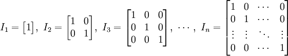

矩阵库
NumPy 中包含了一个矩阵库 numpy.matlib，该模块中的函数返回的是一个矩阵，而不是 ndarray 对象。
一个 的矩阵是一个由行（row）列（column）元素排列成的矩形阵列。
矩阵里的元素可以是数字、符号或数学式。以下是一个由6个数字元素构成的2行3列的矩阵：
转置矩阵
NumPy 中除了可以使用 numpy.transpose 函数来对换数组的维度，还可以使用 T 属性。。
例如有个行列的矩阵，使用 t() 函数就能转换为行列的矩阵。

>>> import numpy as np
>>> a = np.arange(12).reshape(3, 4)
>>> print(a)
[[ 0 1 2 3]
[ 4 5 6 7]
[ 8 9 10 11]]
>>> print(a.T)
[[ 0 4 8]
[ 1 5 9]
[ 2 6 10]
[ 3 7 11]]
numpy.matlib.empty()
matlib.empty() 函数返回一个新的矩阵，语法格式为：
numpy.matlib.empty(shape, dtype, order)
参数说明：
- shape：定义新矩阵形状的整数或整数元组
- Dtype：可选，数据类型
- order：C（行序优先）或者 F（列序优先）
>>> import numpy.matlib
>>> import numpy as np
>>> print(np.matlib.empty((2, 2)))
[[0.00000000e+000 2.96174557e-085]
[4.48036926e-067 1.41303097e-308]]
numpy.matlib.zeros()
numpy.matlib.zeros() 函数创建一个以0填充的矩阵。
>>> import numpy.matlib
>>> import numpy as np
>>> print(np.matlib.zeros((2, 2)))
[[0. 0.]
[0. 0.]]
numpy.matlib.ones()
numpy.matlib.ones() 函数创建一个以1填充的矩阵。
>>> import numpy.matlib
>>> import numpy as np
>>> print(np.matlib.ones((2, 2)))
[[1. 1.]
[1. 1.]]
numpy.matlib.eye()
numpy.matlib.eye() 函数返回一个矩阵，对角线元素为1，其他位置为零。
numpy.matlib.eye(n, M, k, dtype)
参数说明：
- n：返回矩阵的行数
- M：返回矩阵的列数，默认为 n
- k：对角线的索引
- dtype: 数据类型
>>> import numpy.matlib
>>> import numpy as np
>>> print(np.matlib.eye(n = 3, M = 4, k = 0, dtype = float))
[[1. 0. 0. 0.]
[0. 1. 0. 0.]
[0. 0. 1. 0.]]
numpy.matlib.identity()
numpy.matlib.identity() 函数返回给定大小的单位矩阵。
单位矩阵式个方阵，从左上角到右下角的对角线（称为主对角线）上的元素均为1，除此之外全都为 0。

>>> import numpy.matlib
>>> import numpy as np
>>> print(np.matlib.identity(5, dtype = float))
[[1. 0. 0. 0. 0.]
[0. 1. 0. 0. 0.]
[0. 0. 1. 0. 0.]
[0. 0. 0. 1. 0.]
[0. 0. 0. 0. 1.]]
numpy.matlib.rand()
numpy.matlib.rand() 函数创建一个给定大小的矩阵，数据是随机填充的。
>>> import numpy.matlib
>>> import numpy as np
>>> print(np.matlib.rand(3, 3))
[[0.0848446 0.760929 0.94157133]
[0.67884563 0.82797055 0.28249415]
[0.02912332 0.18955343 0.08051821]]
矩阵总是二维的，而 ndarray 是一个 n 维数组。两个对象都是可互换的。
>>> import numpy.matlib
>>> import numpy as np
>>> i = np.matrix('1,2;3,4')
>>> print(1)
1
>>> print(i)
[[1 2]
[3 4]]
>>> j = np.asarray(i)
>>> print(j)
[[1 2]
[3 4]]
>>> k = np.asmatrix(j)
>>> print(k)
[[1 2]
[3 4]]